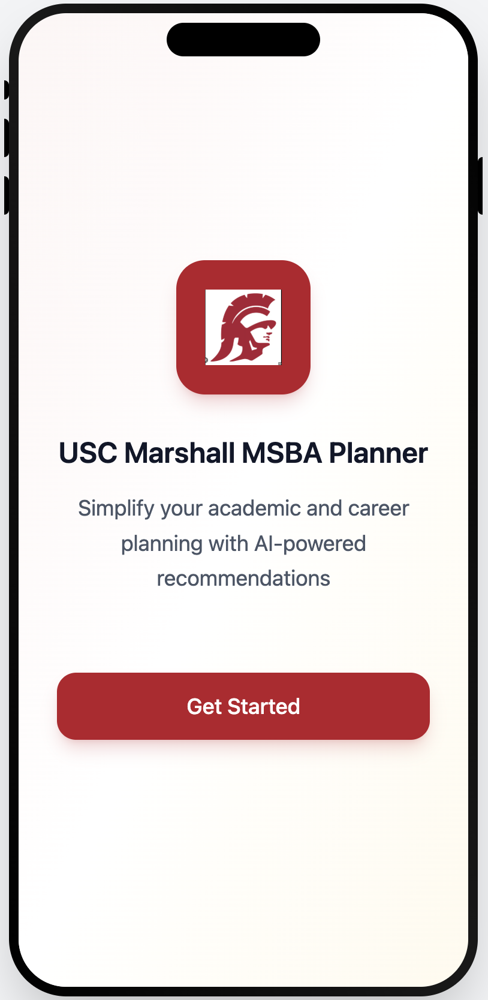
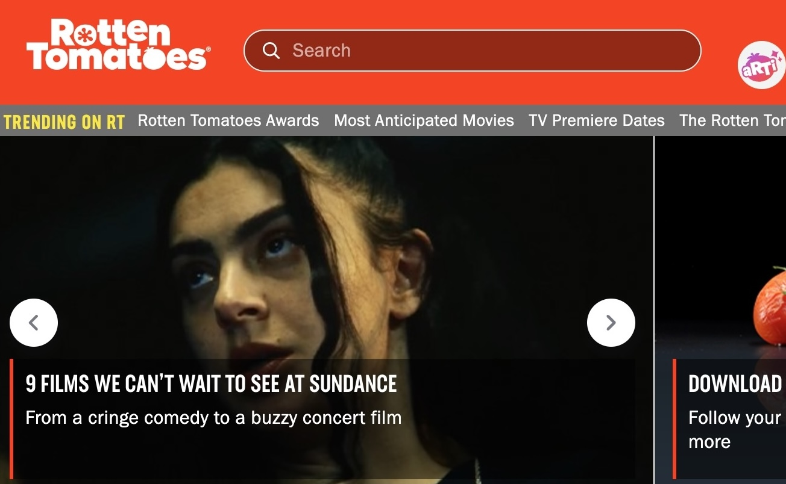

Build insights with data.
Here, you can see what I can do that AI can't.
5
Projects
Selected work across analytics, data engineering, and product thinking.

AI-Powered Academic & Career Planning Platform

Sales Agent & Pricing Analysis (Entertainment)

Spotify Popularity Analysis (Danceability Factor)
